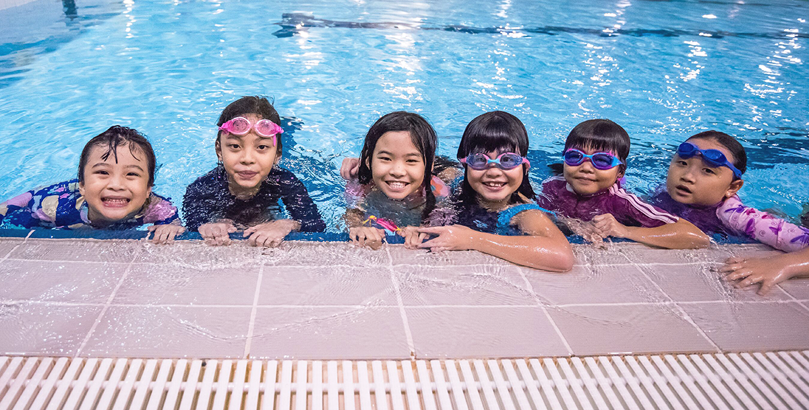

BENEFITs of
SURVIVAL SKILL
Unlike other sports, swimming is considered a necessity because it is a life-saving skill. Knowing how to swim and being a strong swimmer can give you peace of mind to enjoy everyday summer activities while still using caution.
GAINING STRENGTH
People, who regularly swim, usually develop lean muscles and gain muscle strength throughout their body. This is one of the biggest benefits of swimming in relation to health. Running merely helps you to develop muscles in your legs, while
swimming uses more muscle groups, which helps to improve overall muscle strength. Swimming, not only offers benefits of cardiovascular exercises, but also gives you a full body workout that helps you to build lean muscles and strengthen
your body.
GREAT HEART HEALTH
The average human has a resting heart rate of approximately 60 – 70 beats per minute. Most athletes, however, have a resting heart rate as low as 40 – 60 beats per minute. The heart is a muscle, and, like every other muscle in the body, you
can train and strengthen it. This means that your heart pumps more blood with each beat, making it more efficient at supplying blood to the body. The health benefit of a lower resting heart rate is that you are at less risk of heart disease.
IMPROVING SLEEP
It has long been hypothesized that physical exercise, like swimming, can help with sleep disorders. Sleep disorders, like insomnia, can plague many people,
offering little respite from the day’s activities leading to more and more fatigue. By swimming, you could offer your body a natural way to decompress from the day and prepare for rest.
MEMORY BOOSTER
By swimming regularly will in turn help to boost our memory capacity! Besides the classroom like experience we have in the pool, another reason swimming
makes us smarter is its effect of improving our memory. A part of our brain consists of the hippocampus, which is a fundamental component of our brain’s learning and memory systems.
EMOTIONAL WELL-BEING
With busy and stressful lives, we can find our mental health falling out of balance. With increased pressure levels, we can find ourselves
living less satisfying lives and sleeping less and less. To address your increased levels of tension, you can increase your exercise. Physical activity releases endorphins which are a natural way to reduce stressors.
KIDS POOL (Just next to the training area)
The Kids pool measures just 0.6m in depth which makes it very comfortable and safe for the average 4 to 5-year-olds to take a dip in. The cool waters of the wading pool
also feature a carousel of yellow bucket seats by the corner for toddlers making it the perfect spot to practice their swimming kicks as they splash their feet in the water!
